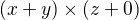
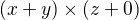
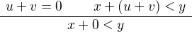
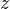
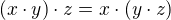
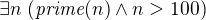
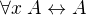

Logic and Proof
8 Natural Deduction for First Order Logic
8.1 Rules of Inference
In the last chapter, we discussed the language of first-order logic, and the rules that govern their use. We summarize them here:
8.1.1 Universal quantifier
In the introduction rule,  should not be free in any uncanceled
hypothesis. In the elimination rule,
should not be free in any uncanceled
hypothesis. In the elimination rule,  can be any term that does not
clash with any of the bound variables in
can be any term that does not
clash with any of the bound variables in  .
.
8.1.2 Existential quantifier
In the introduction rule, cant be any term that does not clash
with any of the bound variables in . In the elimination rule,  should not be free in
should not be free in  or any uncanceled hypothesis.
or any uncanceled hypothesis.
8.1.3 Equality
Strictly speaking, only and the second substitution rule are necessary. The others can be derived from them.
8.2 The Universal Quantifier
The following example of a proof in natural deduction shows that if,
for every , holds, and for every , holds, then for
every , they both hold:
Notice that neither of the assumptions 1 or 2 mention , so
that is really "arbitrary" at the point where the universal
quantifiers are introduced.
Here is another example:
As an exercise, try proving the following:
Here is a more challenging exercise. Suppose I tell you that, in a town, there is a (male) barber that shaves all and only the men who do not shave themselves. You can show that this is a contradiction, arguing informally, as follows:
By the assumption, the barber shaves himself if and only if he does not shave himself. Call this statement (*).
Suppose the barber shaves himself. By (*), this implies that he does not shave himself, a contradiction. So, the barber does not shave himself.
But using (*) again, this implies that the barber shaves himself, which contradicts the fact we just showed, namely, that the barber does not shave himself.
Try to turn this into a formal argument in natural deduction.
Let us return to the example of the natural numbers, to see how deductive notions play out there. Suppose we have defined and in such a way that we can prove:
Then we can go on to derive as follows:
We can also prove and :
As we move from modeling basic rules of inference to modeling actual mathematical proofs, we will tend to shift focus from natural deduction to formal proofs in Lean. Natural deduction has its uses: as a model of logical reasoning, it provides us with a convenient means to study metatheoretic properties such as soundness and completeness. For working within the system, however, proof languages like Lean's tend to scale better, and produce more readable proofs.
8.3 The Existential Quantifier
Remember that the intuition behind the elimination rule for the
existential quantifier is that if we know  , we can
temporarily reason about an arbitrary element satisfying in
order to prove a conclusion that doesn't depend on . Here is an
example of how it can be used. The next proof says that if we know
there is something satisfying both and , then we know, in
particular, that there is something satisfying .
, we can
temporarily reason about an arbitrary element satisfying in
order to prove a conclusion that doesn't depend on . Here is an
example of how it can be used. The next proof says that if we know
there is something satisfying both and , then we know, in
particular, that there is something satisfying .
The following proof shows that if there is something satsifying either
or , then either there is something satisfying , or there is
something satisfying .

The following example is more involved:
In this proof, the existential elimination rule (the line labeled )
is used to cancel two hypotheses at the same time. Note that when this
rule is applied, the hypothesis has not
yet been canceled. So we have to make sure that this formula doesn't
contain the variable freely. But this is o.k., since this
hypothesis contains only as a bound variable.
Another example is that if does not occur in  , then
is equivalent to :
, then
is equivalent to :
This short but tricky, so let us go through it carefully. On the left,
we assume to conclude . We assume , and now we can
immediately cancel this assumption by existential elimination, since
does not occur in , so it doesn't occur freely in any
assumption or in the conclusion. On the right we use existential
introduction to conclude from .
8.4 Equality
Recall the natural deduction rules for equality:
Keep in mind that we have implicitly fixed some first-order language,
and ,  , and are any terms in that language. Recall also that
we have adopted the practice of using functional notation with
terms. For example, if we think of as the term  in the language of arithmetic, then is the term and is . So one example of the first inference on the second line is this:
, and are any terms in that language. Recall also that
we have adopted the practice of using functional notation with
terms. For example, if we think of as the term  in the language of arithmetic, then is the term and is . So one example of the first inference on the second line is this:
The second axiom on that line is similar, except now  stands for
any formula, as in the following inference:
stands for
any formula, as in the following inference:

Notice that we have written the reflexivity axiom,  , as a rule
with no premises. If you use it in a proof, it does not count as a
hypothesis; it is built into the logic.
, as a rule
with no premises. If you use it in a proof, it does not count as a
hypothesis; it is built into the logic.
In fact, we can think of the first inference on the second line as a
special case of the first. Consider, for example, the formula . If we plug
in for , we get an instance of reflexivity. If we plug in  , we
get the conclusion of the first example above. The following is
therefore a derivation of the first inference, using only reflexivity
and the second substitution rule above:
, we
get the conclusion of the first example above. The following is
therefore a derivation of the first inference, using only reflexivity
and the second substitution rule above:
Roughly speaking, we are replacing the second instance of in
an instance of reflexivity with to get the conclusion we want.
Equality rules let us carry out calculations in symbolic logic. This
typically amounts to using the equality rules we have already
discussed, together with a list of general identities. For example,
the following identities hold for any real numbers , , and :
- commutativity of addition:
- associativity of addition:
- additive identity:
- additive inverse:
- multiplicative identity:
- commutativity of multiplication:
- associativity of multiplication: 
- distributivity:
You should imagine that there are implicit universal quantifiers in
front of each statement, asserting that the statement holds for any
values of , , and . Note that , , and can, in
particular, be integers or rational numbers as well. Calculations
involving real numbers, rational numbers, or integers generally
involve identities like this.
The strategy is to use the elimination rule for the universal quantifier to instantiate general identities, use symmetry, if necessary, to orient an equation in the right direction, and then using the substitution rule for equality to change something in a previous result. For example, here is a natural deduction proof of a simple identity, , using only commutativity and associativity of addition. We have taken the liberty of using a brief name to denote the relevant identities, and combining multiple instances of the universal quantifier introduction and elimination rules into a single step.
There is generally nothing interesting to be learned from carrying out such calculations in natural deduction, but you should try one or two examples to get the hang of it, and then take pleasure in knowing that it is possible.
8.5 Counterexamples and Relativized Quantifiers
Consider the statement:
Every prime number is odd.
In first-order logic, we could formulate this as . This statement is false, because there is a prime number which is even, namely the number 2. This is called a counterexample to the statement.
More generally, given a formula , a counterexample is a
value such that holds. Such a counterexample shows
that the original formula is false, because we have the following
equivalence:  . So if we find a
value such that holds, then by the existential
introduction rule we can conclude that , and then by
the above equivalence we have . Here is a proof of the equivalence:
. So if we find a
value such that holds, then by the existential
introduction rule we can conclude that , and then by
the above equivalence we have . Here is a proof of the equivalence:
One remark about the proof: at the step marked by we cannot use
the existential introduction rule, because at that point our only
assumption is , and from that assumption we cannot
prove for a particular term . So we use a proof by
contradiction there.
As an exercise, prove the "dual" equivalence yourself:  . This can be done without using proof by
contradiction.
. This can be done without using proof by
contradiction.
In Chapter 7 we saw examples of how to use relativization to restrict the scope of a universal quantifier. Suppose we want to say "every prime number is greater than 1". In first order logic this can be written as . The reason is that the original statement is equivalent to the statement "for every natural number, if it is prime, then it is greater than 1". Similarly, suppose we want to say "there exists a prime number greater than 100." This is equivalent to saying "there exists a natural number which is prime and greater than 100," which can be expressed as .
As an exercise you can prove the above results about negations of quantifiers also for relativized quantifiers. Specifically, prove the following statements:
 ;
;
For reference, here is a list of valid sentences involving quantifiers:
-  if is not free in
- if is not free in
- if is
not free in
- if is not
free in
- if
is not free in
- if is not free in
- if
is not free in
-
if is not free in
All of these can be derived in natural deduction. The last two allow us to push negations inwards, so we can continue to put first-order formulas in negation normal form. Other rules allow us to bring quantifiers to the front of any formula, though, in general, there will be multiple ways of doing this. For example, the formula
is equivalent to both
and
A formula with all the quantifiers in front is said to be in prenex form.
8.6 Exercises
Give a natural deduction proof of
- Give a natural deduction proof of
 from hypotheses
and .
from hypotheses
and . - From hypotheses
 and give a natural deduction proof
. (It might help to
think of as the function defined by .)
and give a natural deduction proof
. (It might help to
think of as the function defined by .) - Give a natural deduction proof of .
- Give a natural deduction proof of from the assumptions and .
- Prove some of the other equivalences in the last section.
Consider some of the various ways of expressing ``nobody trusts a politician'' in first-order logic:
They are all logically equivalent. Show this for (b) and (d), by giving natural deduction proofs of each from the other. (As a shortcut, in the
 introduction and elimination rules, you
can introduce / eliminate both variables in one step.)
introduction and elimination rules, you
can introduce / eliminate both variables in one step.)
Formalize the following statements, and give a natural deduction proof in which the first three statements appear as (uncancelled) hypotheses, and the last line is the conclusion:
- Every young and healthy person likes baseball.
- Every active person is healthy.
- Someone is young and active.
- Therefore, someone likes baseball.
Use
 for ``is young,'' for ``is healthy,'' for
``is active,'' and for ``likes baseball.''
for ``is young,'' for ``is healthy,'' for
``is active,'' and for ``likes baseball.''
- Give a natural deduction proof of using the equality rules in Section 8.4.
Give a natural deduction proof of using only these two hypotheses (and none of the new equality rules):
(Hint: Choose instantiations of , , and
 carefully. You
can instantiate all the universal quantifiers in one step, as on
the last homework assignment.)
carefully. You
can instantiate all the universal quantifiers in one step, as on
the last homework assignment.)
- Give a natural deduction proof of
- Give a natural deduction proof of

Remember that both the following express , that is, the statement that there is a unique
satisfying :
Do the following:
- Give a natural deduction proof of the second, assuming the first as a hypothesis.
- Give a natural deduction proof of the first, asssuming the second as a hypothesis.
(Warning: these are long.)